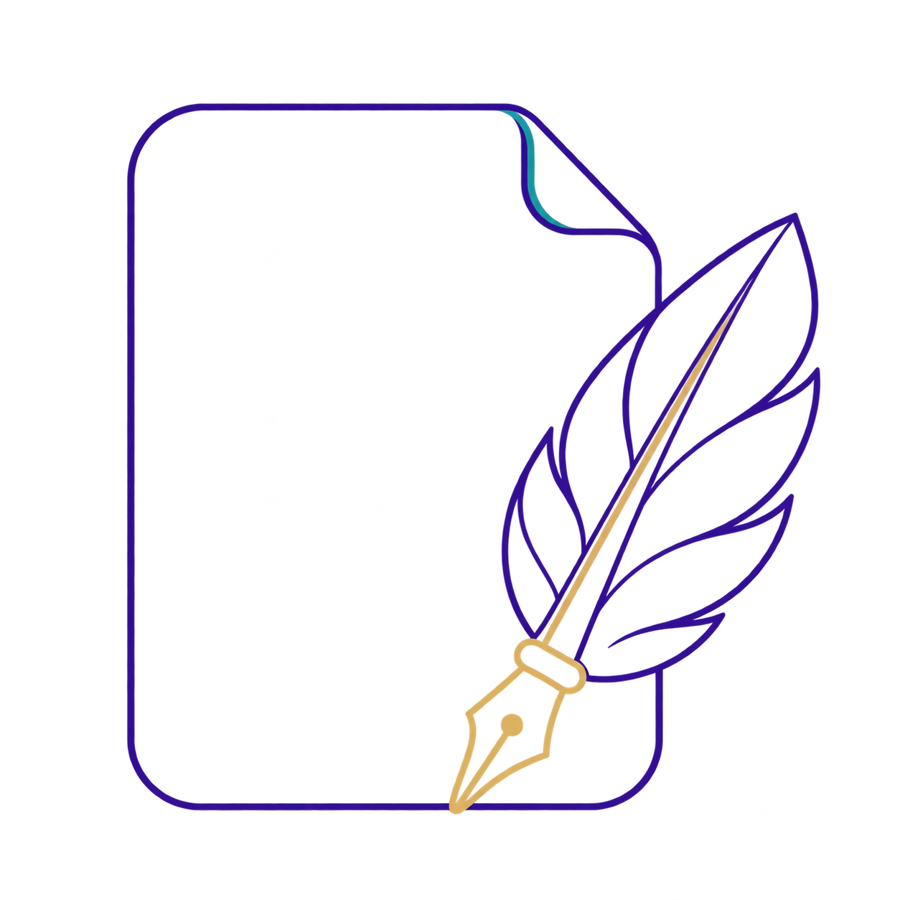
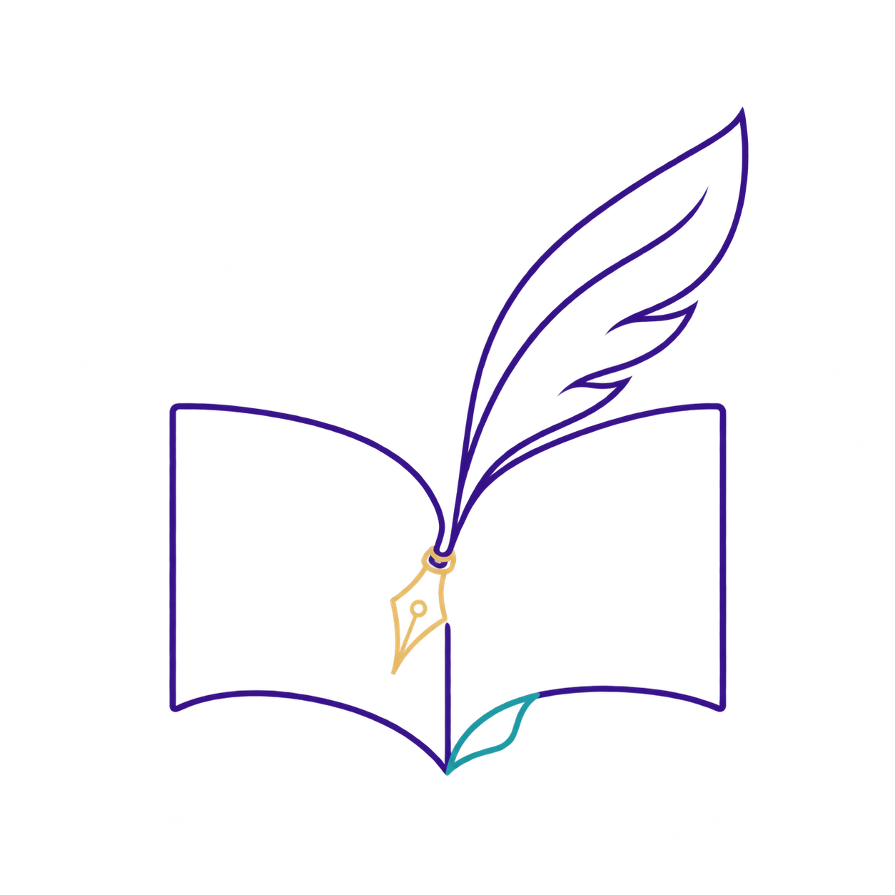
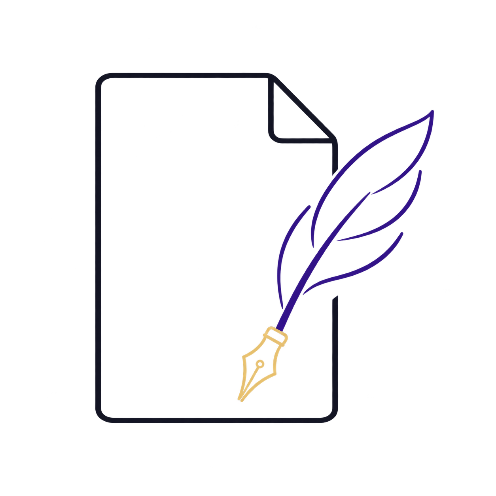

24 static concepts based on the selected first icon. Each keeps the blank folded page, purple feather and gold nib. These explore a mature finish with less cartoon styling. The requested material and gradient studies are an exception for this product-icon exploration; the official company logo remains unchanged.



Variable means a responsive identity: detailed, regular, and micro-size simplification. Concept images need final selection, exact-color artwork cleanup and Windows small-size verification before release. All images generated with the built-in image generation tool; see PROMPTS.json.